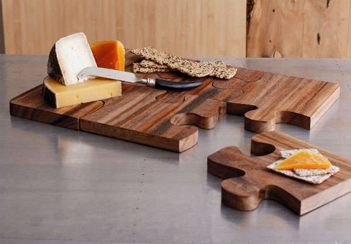
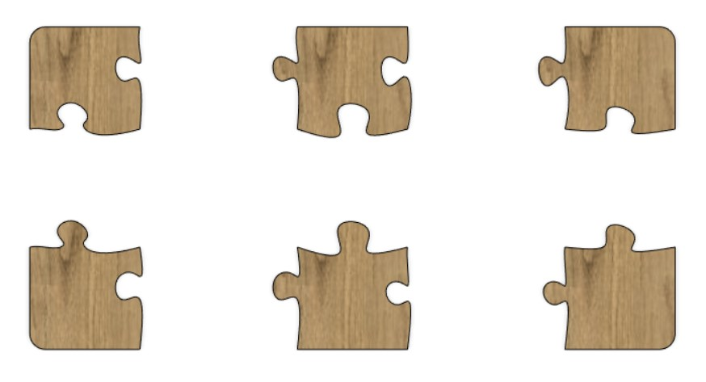
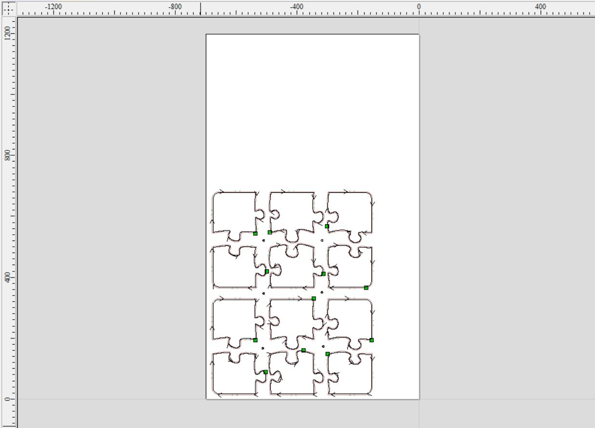
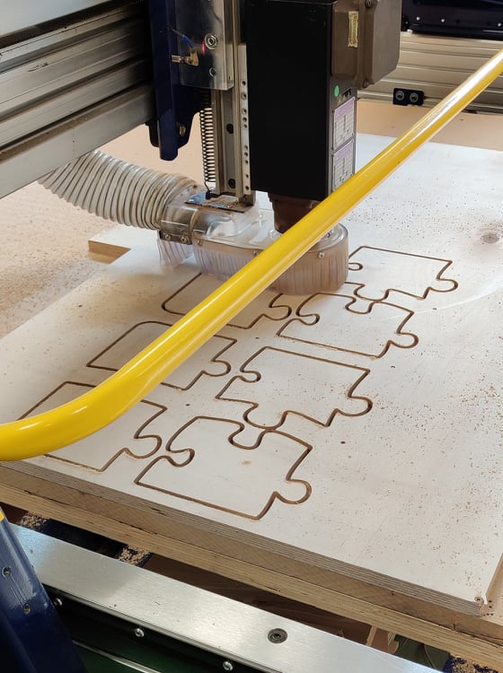
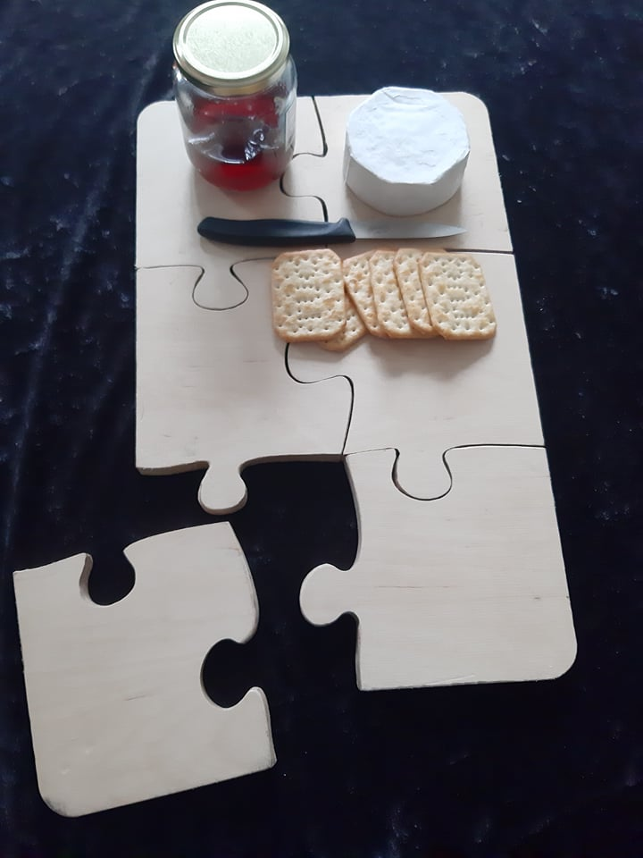

Í verkefni 4 átti að hanna, teikna, undirbúa og fræsa eitthvað stórt. Ákveðið var að hanna eitthvað nytsamlegt sem gaman væri að eiga og varð skurðarbretti fyrir valinu. Innblástuinn sóttum við á google og leituðum til dæmis að "cnc ideas", "cnc cutting board" og "puzzle cutting board". Þá fundum við til dæmis skurðarbrettið sem sjá má á eftirfarandi mynd:
Eftir að búið var að ákveða að hanna skurðarbretti með innblæstri í það sem er á myndinni hér að ofan skipti hópurinn á milli sín verkefnum. Birta sá um að hanna og teikna upp hlutinn í Fusion360, Davíð sá um að undirbúa hlutinn fyrir framleiðslu með Vcarve og Elísa undirbjó sig fyrir framleiðslu og hafði yfirumsjón með henni.
Birta sá um að hanna og teikna verkefnið. Ítarleg skrásetning á því er á vefsíðunni hennar. Útkomuna má sjá á myndinni hér að neðan:
Skrásetning hönnunar á vefsíðu Birtu
Eftir að Birta hafði lokið við að hanna og teikna hlutinn fékk Davíð dxf skrá af teikningunni og vann með hana í Vcarve. Þar undirbjó hann meðal annars toolpaths fyrir framleiðslu á skurðarbrettinu. Ítarlegri lýsingu á verkþætti Davíðs er að finna á vefsíðunni hans, en á myndinni hér að neðan má sjá loka útkomuna í Vcarve.
Elísa hafði yfirumsjón með því að framleiða hlutinn. Á vefsíðunni hennar er að finna ítarlega skrásetningu á hvernig framleiðslan fór fram. Á myndinni hér fyrir neðan má sjá skurðarbrettin í framleiðslu:
Skrásetning framleiðslu á vefsíðu Elísu
Þegar framleiðslu var lokið kom í ljós að það þyrfti að laga brúnirnar á brettinu aðeins. Brettið passaði ekki nógu vel saman og það var auðveldlega hægt að fá flísar úr brúnunum. Til þess að laga þetta var notaður sandpappír. Í lokinn var viðar olía borin á brettið. Lokaniðurstöðuna má sjá á myndinni hér fyrir neðan:
